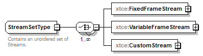
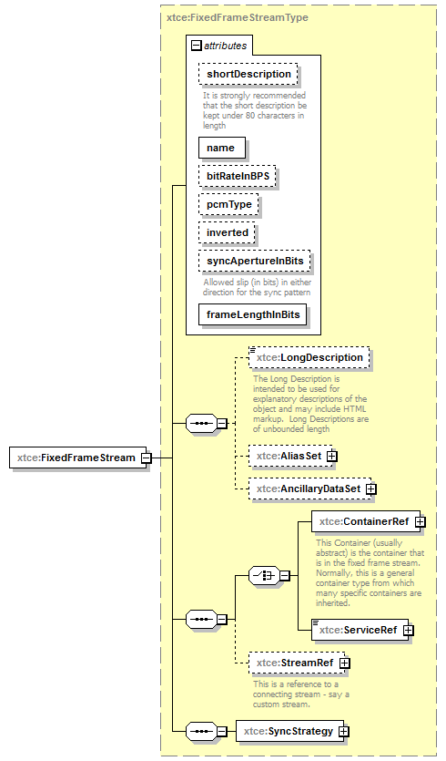
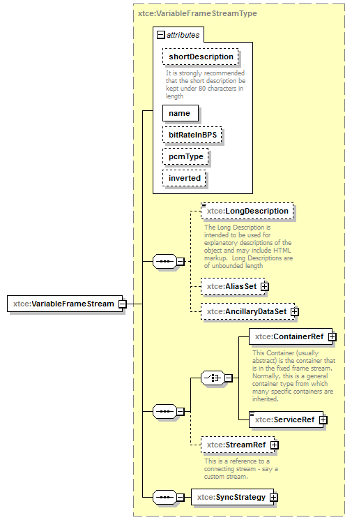
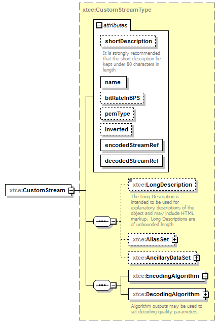

| diagram |  | ||
| namespace | http://www.omg.org/space/xtce | ||
| children | xtce:FixedFrameStream xtce:VariableFrameStream xtce:CustomStream | ||
| used by |
|
||
| annotation |
|
||
| source | <complexType name="StreamSetType"> <annotation> <documentation xml:lang="en">Contains an unordered set of Streams.</documentation> </annotation> <choice maxOccurs="unbounded"> <element name="FixedFrameStream" type="xtce:FixedFrameStreamType"/> <element name="VariableFrameStream" type="xtce:VariableFrameStreamType"/> <element name="CustomStream" type="xtce:CustomStreamType"/> </choice> </complexType> |
| diagram |  | ||||||||||||||||||||||||||||||||||||||||||||||||||||
| namespace | http://www.omg.org/space/xtce | ||||||||||||||||||||||||||||||||||||||||||||||||||||
| type | xtce:FixedFrameStreamType | ||||||||||||||||||||||||||||||||||||||||||||||||||||
| properties |
|
||||||||||||||||||||||||||||||||||||||||||||||||||||
| children | xtce:LongDescription xtce:AliasSet xtce:AncillaryDataSet xtce:ContainerRef xtce:ServiceRef xtce:StreamRef xtce:SyncStrategy | ||||||||||||||||||||||||||||||||||||||||||||||||||||
| attributes |
|
||||||||||||||||||||||||||||||||||||||||||||||||||||
| source | <element name="FixedFrameStream" type="xtce:FixedFrameStreamType"/> |
| diagram |  | ||||||||||||||||||||||||||||||||||||||
| namespace | http://www.omg.org/space/xtce | ||||||||||||||||||||||||||||||||||||||
| type | xtce:VariableFrameStreamType | ||||||||||||||||||||||||||||||||||||||
| properties |
|
||||||||||||||||||||||||||||||||||||||
| children | xtce:LongDescription xtce:AliasSet xtce:AncillaryDataSet xtce:ContainerRef xtce:ServiceRef xtce:StreamRef xtce:SyncStrategy | ||||||||||||||||||||||||||||||||||||||
| attributes |
|
||||||||||||||||||||||||||||||||||||||
| source | <element name="VariableFrameStream" type="xtce:VariableFrameStreamType"/> |
| diagram |  | ||||||||||||||||||||||||||||||||||||||||||||||||||
| namespace | http://www.omg.org/space/xtce | ||||||||||||||||||||||||||||||||||||||||||||||||||
| type | xtce:CustomStreamType | ||||||||||||||||||||||||||||||||||||||||||||||||||
| properties |
|
||||||||||||||||||||||||||||||||||||||||||||||||||
| children | xtce:LongDescription xtce:AliasSet xtce:AncillaryDataSet xtce:EncodingAlgorithm xtce:DecodingAlgorithm | ||||||||||||||||||||||||||||||||||||||||||||||||||
| attributes |
|
||||||||||||||||||||||||||||||||||||||||||||||||||
| source | <element name="CustomStream" type="xtce:CustomStreamType"/> |